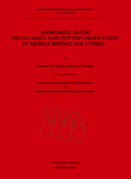
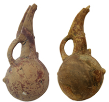
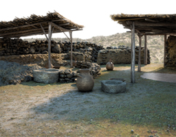
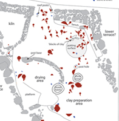
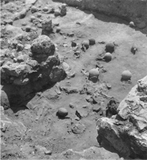

Jennifer M. Webb and David Frankel
Ambelikou Aletri. Metallurgy and Pottery Production in Middle Bronze Age Cyprus.
Studies in Mediterranean Archaeology Volume 138
With contributions by Myrto Georgakopoulou and Thilo Rehren and by George Constantinou and Ioannis Panayides
Uppsala, Åströms förlag, 2013. ISBN: 978-91-7081-250-7
|  | This well-illustrated volume presents the full documentation, analysis and discussion of the excavations carried out by Porphyrios Dikaios in 1942 at Ambelikou Aletri in Cyprus. The site lies to the west of the modern village of Ambelikou, northwest of the Skouriotissa copper mines, in the northern foothills of the Troodos Mountains. It has always been known for the evidence of copper mining and processing through the discovery of Middle Bronze Age pottery in modern mines and of casting moulds and other evidence for metal processing at the site itself. Less well known is a potter's workshop. Here the catastrophic abandonment of the workshop, its installations and artefacts (including some four dozen jugs from the last kiln load) provides a unique insight into aspects of craft practices shortly after 2,000 BCE. |
{kind=link}
|  |  |  |  |
| Some of the jugs produced in the workshop, many of which were burnt in the fire which destroyed the building. | Artist's reconstruction of the potter's workshop in Area 2 (visualisation by Alexander Perrin) | Proposed layout of the pottery workshop in Area 2 | The entrance to the pottery workshop in Area 2, showing a number of jugs from the last kiln load |
{kind=link}
{kind=link}
{kind=link}
{kind=link}
| Back to Publications |